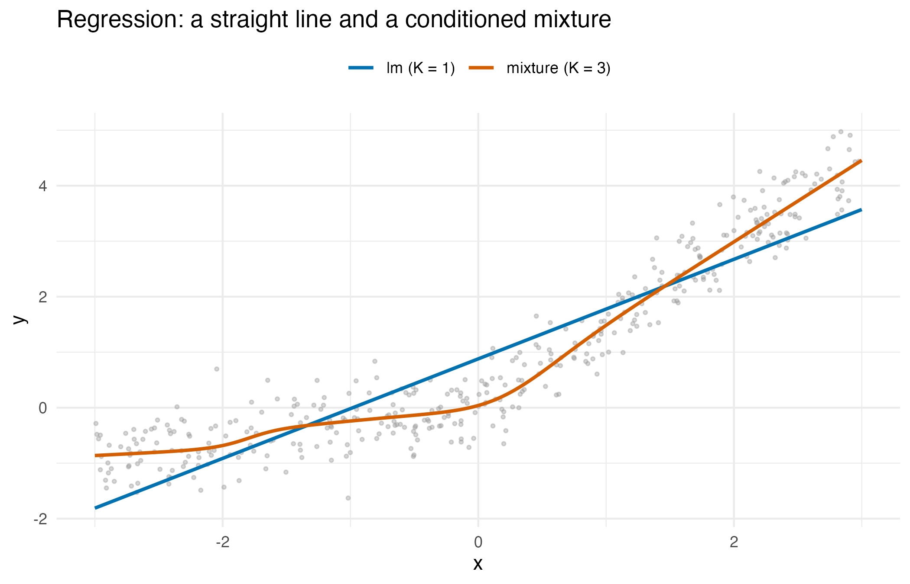
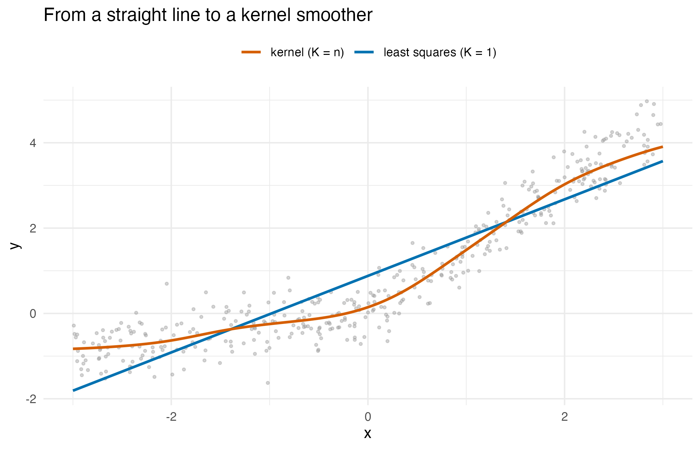
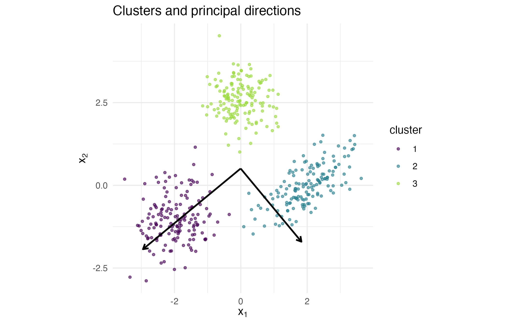
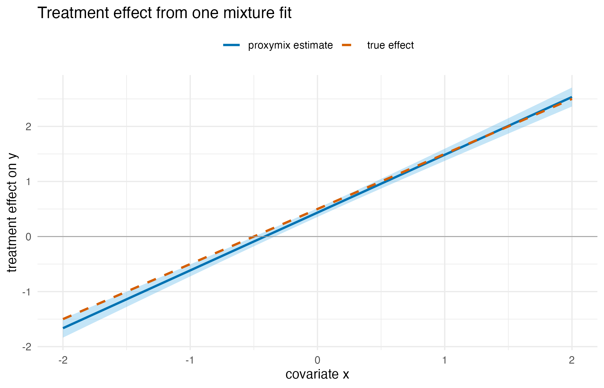

has_ggplot2 <- requireNamespace("ggplot2", quietly = TRUE)The problem
A typical analysis needs several tools: a regression line with
lm(), a smoothed curve, clusters from
kmeans(), principal directions from prcomp(),
shrunken regression slopes, and a treatment effect that changes from
unit to unit. Each job usually needs its own function or package.
A Gaussian mixture, a sum of a few normal distributions, describes all the columns of a table at once (van der Hoek and Elliott, 2024). From a fitted mixture you can fix some variables at chosen values and get the exact distribution of the rest. This operation is called conditioning. This vignette shows that conditioning and a few related exact operations reproduce six of the analyses above. Each result is checked against the usual tool, with the cost of the substitution stated.
Package capabilities
-
gmm_target_from_samples()turns a data matrix into a target, the distribution to be approximated. -
fit_proxymix()fits the mixture. With one component it copies the mean and covariance of the data (regime = "moment"). With more it uses the expectation-maximisation (EM) algorithm, which adjusts the components step by step (regime = "sample"). Itsridge_epsargument adds a fixed amount to every variance. -
gmm_conditionalise()returns the mixture for some variables when the others are fixed at given values. -
bic_aic()scores a choice of the number of components with the Bayesian and Akaike information criteria (BIC and AIC). Each criterion rewards a close fit to the data, penalises extra parameters, and is lower for the better choice. -
fit_uplift()fits one mixture over an outcome, a treatment and the covariates, the variables measured before treatment.proxy_cate(),proxy_decide()andproxy_identification_report()give the estimated treatment effect, a recommendation to treat or not, and the assumptions behind both.
Addressing the problem
Each subsection below runs one usual tool and the mixture on the same data and compares the results. The mixture has components. The prediction of at a value of is the mean of once is fixed, written .
## Mean of the first variable (y) when the second (x) is fixed at each value
## of xv: the component means of y, weighted by how likely each component is
## at that x.
cond_mean <- function(fit, xv) {
vapply(xv, function(xx) {
g <- gmm_conditionalise(fit, given = c(NA, xx))
sum(g@weights * vapply(g@means, function(m) m[1L], numeric(1L)))
}, numeric(1L))
}Regression: lm()
The usual tool is lm(), which fits one straight line.
The mixture route fits a mixture to the pairs
and conditions on
.
With one component, the conditional mean is exactly the least-squares
line. With three components, the line can bend.
set.seed(20260617)
n <- 400L
x <- runif(n, -3, 3)
y <- 0.3 * x + 1.2 * pmax(x, 0) + rnorm(n, sd = 0.4) # bends at x = 0
dat <- data.frame(y = y, x = x)
joint <- gmm_target_from_samples(cbind(y, x))
fit1 <- fit_proxymix(joint, N = 1L, regime = "moment", ridge_eps = 0)
fit3 <- fit_proxymix(joint, N = 3L, regime = "sample", max_iter = 150L)
## With one component, the slope of E[y | x] should equal the lm slope.
slope_mix <- gmm_conditionalise(fit1, given = c(NA, 1))@means[[1L]] -
gmm_conditionalise(fit1, given = c(NA, 0))@means[[1L]]
slope_lm <- unname(coef(lm(y ~ x, dat))["x"])
diff_reg <- abs(slope_mix - slope_lm)
grid_reg <- data.frame(x = seq(-3, 3, length.out = 200L))
grid_reg$ols <- as.numeric(predict(lm(y ~ x, dat), newdata = grid_reg))
grid_reg$mix <- cond_mean(fit3, grid_reg$x)
ggplot2::ggplot() +
ggplot2::geom_point(data = dat, ggplot2::aes(x, y), colour = "grey60",
alpha = 0.4, size = 0.7) +
ggplot2::geom_line(data = grid_reg,
ggplot2::aes(x, ols, colour = "lm (K = 1)"),
linewidth = 0.9) +
ggplot2::geom_line(data = grid_reg,
ggplot2::aes(x, mix, colour = "mixture (K = 3)"),
linewidth = 0.9) +
ggplot2::scale_colour_manual(
name = NULL,
values = c("lm (K = 1)" = "#0072B2", "mixture (K = 3)" = "#D55E00")
) +
ggplot2::labs(
x = "x", y = "y",
title = "Regression: a straight line and a conditioned mixture"
) +
ggplot2::theme_minimal(base_size = 11) +
ggplot2::theme(legend.position = "top")
The least-squares line (one component) and the conditional mean of a three-component mixture, on data whose true relationship bends at zero. The mixture follows the bend, and the straight line does not.
Each component gives its own straight line for given . The probability that a point at belongs to component , written , changes with . The prediction therefore switches smoothly from one line to another, which produces the bend. This method is known as Gaussian-mixture regression (de Veaux, 1989).
Kernel regression: Nadaraya-Watson
A kernel smoother predicts
at
as a weighted average of the observed
values, with weights that fall off with distance from
.
The Nadaraya-Watson estimator (Nadaraya, 1964; Watson, 1964) uses
normal-shaped weights, and the width of those weights,
,
is called the bandwidth. It is available in R as
stats::ksmooth() and in the np package. The
mixture route places one small normal distribution on every data point,
a kernel density estimate of
,
and conditions on
.
The conditional mean is then exactly the Nadaraya-Watson estimate.
h <- 0.4 # bandwidth
nw <- function(xq) {
vapply(xq, function(q) {
w <- dnorm(q, x, h) # Nadaraya-Watson weights
sum(w * y) / sum(w)
}, numeric(1L))
}
## One normal component per data point, then condition on x.
kde <- gmm(weights = rep(1 / n, n),
means = lapply(seq_len(n), function(i) c(y[i], x[i])),
covariances = rep(list(diag(c(h^2, h^2))), n))
xq <- seq(-2.5, 2.5, length.out = 21L)
diff_nw <- max(abs(nw(xq) - cond_mean(kde, xq)))
grid_nw <- data.frame(x = seq(-3, 3, length.out = 200L))
grid_nw$ols <- as.numeric(predict(lm(y ~ x, dat), newdata = grid_nw))
grid_nw$nw <- nw(grid_nw$x)
ggplot2::ggplot() +
ggplot2::geom_point(data = dat, ggplot2::aes(x, y), colour = "grey60",
alpha = 0.4, size = 0.7) +
ggplot2::geom_line(data = grid_nw,
ggplot2::aes(x, ols, colour = "least squares (K = 1)"),
linewidth = 0.9) +
ggplot2::geom_line(data = grid_nw,
ggplot2::aes(x, nw, colour = "kernel (K = n)"),
linewidth = 0.9) +
ggplot2::scale_colour_manual(
name = NULL,
values = c("least squares (K = 1)" = "#0072B2",
"kernel (K = n)" = "#D55E00")
) +
ggplot2::labs(
x = "x", y = "y",
title = "From a straight line to a kernel smoother"
) +
ggplot2::theme_minimal(base_size = 11) +
ggplot2::theme(legend.position = "top")
The two ends of one scale: the least-squares line (one component) and the Nadaraya-Watson smoother (one component per data point). The same conditioning step produces both.
After conditioning, component
has mean
and weight
.
The conditional mean
is the Nadaraya-Watson ratio, and the bandwidth
is the spread of each component. Least squares uses
and the kernel smoother uses
.
from_kde() gives mixtures with any number of components in
between.
Clustering: kmeans()
kmeans() splits the rows into groups. The
mclust package fits a Gaussian mixture for the same purpose
(Fraley and Raftery, 2002). In the mixture route, each component is a
cluster. Each row gets a probability of belonging to each component,
called its responsibility, instead of a single label.
set.seed(20260617)
x_clust <- rbind(
mvnfast::rmvn(150L, c(-2, -1), 0.5 * diag(2)),
mvnfast::rmvn(150L, c(2, 0), matrix(c(0.6, 0.3, 0.3, 0.4), 2L)),
mvnfast::rmvn(150L, c(0, 2.5), 0.3 * diag(2))
)
colnames(x_clust) <- c("V1", "V2")
target_clust <- gmm_target_from_samples(x_clust)
fitc <- fit_proxymix(target_clust, N = 3L, regime = "sample",
max_iter = 150L)
## Responsibility of each component for each row.
responsibilities <- function(fit, xx) {
comp <- vapply(seq_len(gmm_n_components(fit)), function(k) {
fit@weights[k] *
mvnfast::dmvn(xx, mu = fit@means[[k]], sigma = fit@covariances[[k]])
}, numeric(nrow(xx)))
comp / rowSums(comp)
}
resp <- responsibilities(fitc, x_clust)
mean_confidence <- mean(apply(resp, 1L, max))| component 1 | component 2 | component 3 |
|---|---|---|
| 1 | 0 | 0 |
| 1 | 0 | 0 |
| 1 | 0 | 0 |
| 1 | 0 | 0 |
The responsibility of component for a point is , where is the weight, the mean and the covariance of component .
Principal components: prcomp()
prcomp() finds the directions in which the data vary
most. These directions are the eigenvectors of the covariance matrix
(Jolliffe, 2002). The mixture route fits one component, whose covariance
equals the sample covariance, and takes its eigenvectors. A single
normal distribution fitted this way is the probabilistic form of
principal components (Tipping and Bishop, 1999).
fit_pca <- fit_proxymix(target_clust, N = 1L, regime = "moment",
ridge_eps = 0)
ev <- eigen(fit_pca@covariances[[1L]])$vectors
pr <- prcomp(x_clust)$rotation
## Each direction may point either way, so compare absolute values.
diff_pca <- max(abs(abs(ev) - abs(unname(pr))))
vals <- eigen(fit_pca@covariances[[1L]])$values
mu_pca <- unname(fit_pca@means[[1L]])
axes <- data.frame(
x = mu_pca[1L], y = mu_pca[2L],
xend = mu_pca[1L] + 2 * sqrt(vals) * ev[1L, ],
yend = mu_pca[2L] + 2 * sqrt(vals) * ev[2L, ]
)
pts <- data.frame(x_clust, cluster = factor(max.col(resp)))
ggplot2::ggplot() +
ggplot2::geom_point(data = pts,
ggplot2::aes(V1, V2, colour = cluster),
alpha = 0.6, size = 0.9) +
ggplot2::geom_segment(
data = axes, ggplot2::aes(x = x, y = y, xend = xend, yend = yend),
arrow = grid::arrow(length = grid::unit(0.2, "cm")), linewidth = 0.8
) +
ggplot2::scale_colour_viridis_d(name = "cluster", end = 0.85) +
ggplot2::coord_equal() +
ggplot2::labs(x = expression(x[1]), y = expression(x[2]),
title = "Clusters and principal directions") +
ggplot2::theme_minimal(base_size = 11)
Clusters (colour) from a three-component fit and principal directions (arrows) from a one-component fit to the same data.
With more than one component, the eigenvectors of each component’s covariance give the main directions of variation within that cluster.
Penalised regression: ridge
When predictors are strongly correlated, least-squares slopes become
unstable. Ridge regression (Hoerl and Kennard, 1970) shrinks the slopes
toward zero with a penalty of size
.
It is available in glmnet and
MASS::lm.ridge(). In the mixture route,
ridge_eps = lambda adds
to the variance of each variable before conditioning.
lambda <- c(0, 0.5, 2, 8)
slope_pm <- vapply(lambda, function(lam) {
f <- fit_proxymix(joint, N = 1L, regime = "moment", ridge_eps = lam)
gmm_conditionalise(f, given = c(NA, 1))@means[[1L]] -
gmm_conditionalise(f, given = c(NA, 0))@means[[1L]]
}, numeric(1L))
slope_formula <- cov(x, y) / (var(x) + lambda)
diff_ridge <- max(abs(slope_pm - slope_formula))| Penalty (lambda) | proxymix slope | Ridge formula |
|---|---|---|
| 0.0 | 0.8968 | 0.8968 |
| 0.5 | 0.7680 | 0.7680 |
| 2.0 | 0.5367 | 0.5367 |
| 8.0 | 0.2434 | 0.2434 |
Conditioning gives the slope , where is the covariance matrix of the predictors and their covariance with . Adding to gives , which is the ridge estimate.
Treatment effects: a separate model for each arm
The treatment effect at
is the difference in the mean outcome between treated and untreated
units with that value of
.
It is called the conditional average treatment effect. A common way to
estimate it is the two-model learner, or T-learner: fit one regression
to the treated units, another to the untreated units, and subtract.
Causal forests (Wager and Athey, 2018; package grf) and
double machine learning (package DoubleML) are other
options. The mixture route fits one mixture over the outcome, the
treatment and the covariate with fit_uplift(). Every later
step uses this one fit without refitting.
The data below are simulated with a known effect, , so the estimate can be compared with the truth. The treatment is assigned at random with probability 0.5.
set.seed(20260902)
n_up <- 600L
x_up <- rnorm(n_up)
t_up <- rbinom(n_up, 1L, 0.5)
tau_true <- function(v) 0.5 + v
y_up <- 1 + tau_true(x_up) * t_up + rnorm(n_up, sd = 0.5)
dat_up <- data.frame(y = y_up, t = t_up, x = x_up)
model <- fit_uplift(dat_up, "y", "t", "x", N = 2L, regime = "sample",
max_iter = 80L, seed = 1L)
model
#> <uplift_model>: K = 2 regimes, assume = "ignorability"
#> outcome : y (continuous)
#> treatment : t (arms 0 vs 1)
#> covariates: x
#> trained on: 600 unitsIn this printed output, and in the report below, “regimes” means the mixture’s components.
proxy_cate() returns the estimated effect with a
standard error and a 95 per cent interval for each unit supplied. The
check below compares it with the T-learner built from lm().
In the model y ~ t * x, the coefficients of t
and t:x are the differences in intercept and slope between
the two arms’ least-squares lines.
grid_up <- data.frame(x = seq(-2, 2, length.out = 41L))
cate <- proxy_cate(model, grid_up)
err_cate <- max(abs(cate$tau - tau_true(grid_up$x)))
## T-learner: one least-squares line per arm, fitted as one model.
fit_arms <- lm(y ~ t * x, data = dat_up)
b_arms <- coef(fit_arms)[c("t", "t:x")]
diff_arms <- max(abs(cate$tau - (b_arms[[1L]] + b_arms[[2L]] * grid_up$x)))
a_arms <- cbind(0, 1, 0, grid_up$x) # picks out t + x * t:x
se_arms <- sqrt(rowSums((a_arms %*% vcov(fit_arms)) * a_arms))
se_ratio <- range(cate$se / se_arms)
## Distance of the fitted intercept and slope from 0.5 and 1, in
## standard errors.
z_arms <- (b_arms - c(0.5, 1)) / sqrt(diag(vcov(fit_arms)))[c("t", "t:x")]
## Treatment value at the centre of each mixture component.
arm_of_component <- vapply(model@fit@means, function(m) {
m[model@roles$treatment]
}, numeric(1L))
cate_df <- as.data.frame(cate)
cate_df$x <- grid_up$x
cate_df$truth <- tau_true(grid_up$x)
ggplot2::ggplot(cate_df, ggplot2::aes(x)) +
ggplot2::geom_ribbon(ggplot2::aes(ymin = ci_lo, ymax = ci_hi),
fill = "#56B4E9", alpha = 0.35) +
ggplot2::geom_line(ggplot2::aes(y = tau, colour = "proxymix estimate"),
linewidth = 0.9) +
ggplot2::geom_line(ggplot2::aes(y = truth, colour = "true effect"),
linewidth = 0.9, linetype = "dashed") +
ggplot2::geom_hline(yintercept = 0, colour = "grey60",
linewidth = 0.3) +
ggplot2::scale_colour_manual(
name = NULL,
values = c("proxymix estimate" = "#0072B2",
"true effect" = "#D55E00")
) +
ggplot2::labs(
x = "covariate x", y = "treatment effect on y",
title = "Treatment effect from one mixture fit"
) +
ggplot2::theme_minimal(base_size = 11) +
ggplot2::theme(legend.position = "top")
The estimated treatment effect with its 95 per cent interval, and the true effect 0.5 + x. The estimate is a straight line, the difference between the two arms’ least-squares lines.
proxy_decide() recommends treatment where the estimated
effect, multiplied by the value of one unit of outcome, exceeds the cost
of treating.
decision <- proxy_decide(model, grid_up, value = 1, cost = 0.5)
switch_x <- grid_up$x[min(which(decision$action == 1L))]| Covariate x | Estimated effect | True effect | Recommended arm | Net value |
|---|---|---|---|---|
| -2 | -1.665 | -1.5 | 0 | -2.165 |
| -1 | -0.615 | -0.5 | 0 | -1.115 |
| 0 | 0.435 | 0.5 | 0 | -0.065 |
| 1 | 1.485 | 1.5 | 1 | 0.985 |
| 2 | 2.534 | 2.5 | 1 | 2.034 |
proxy_cate() accepts only the treatment values seen in
the data, here 0 and 1, and refuses others, as shown below.
refusal <- tryCatch(
proxy_cate(model, grid_up, t1 = 100, t0 = 0),
error = function(e) e
)
msg_lines <- strsplit(conditionMessage(refusal), "\n")[[1L]]
writeLines(strwrap(msg_lines, width = 70L, exdent = 2L))
#> `t1`/`t0` do not match the treatment levels observed at fit
#> time.
#> ℹ Observed treatment levels: 0 and 1.
#> ℹ Supplied: t1 = 100, t0 = 0.
#> ℹ Omit `t1`/`t0` to use the observed arms, or pass one of the
#> observed levels.The identification report states what the estimate is, the assumption it rests on, how well the treated and untreated units overlap in , and how far the estimate could move if a hidden group affected both treatment and outcome. It also lists what is not identified, meaning what the data cannot determine however many units are observed. An example is the counterfactual outcome of one unit: its outcome under the treatment it did not receive.
proxy_identification_report(model, grid_up)
#> Warning: The treatment is almost constant within every regime, so the within-regime
#> effect is zero and the gap equals the whole estimated effect.
#> ℹ The gap carries no information about confounding for this model.
#> == Identification report ==================================
#> Estimand : CATE / uplift: E[Y | do(T=t1), X] - E[Y | do(T=t0), X]
#> Assumption : ignorability
#> requires (Y(0), Y(1)) independent of T given X.
#> Regimes : K = 2 Outcome scale: continuous
#> Units : 41
#> Overlap : 100.0% of units adequately supported
#> Confounding gap (value at risk if a latent regime confounds):
#> mean |Delta| = 1.12, max |Delta| = 2.534
#> NOT identified : the individual counterfactual law
#> (its variance and tail probabilities).
#> ===========================================================The estimated effect is the difference of two conditional means of the same mixture, minus . It is the same conditioning step as in the regression above. Reading this difference as a causal effect requires ignorability: given , the treatment must be unrelated to anything else that affects the outcome. Random assignment, as here, satisfies it.
The report carries a warning because, on data like these, the confounding gap equals the whole estimated effect. Its largest value, 2.534, is the estimated effect at . Each component holds one arm, so a hidden group that matched the arms could account for the entire difference between them. The gap is therefore not a separate check.
Other uses
Missing values can be filled in with
gmm_conditionalise() on the observed variables, either with
the conditional mean or with a random draw from rgmm().
Density estimation is the basic use of a mixture.
from_kde() compresses a kernel density estimate into a
mixture with few components. gmm_observe() performs the
Kalman filter update for a mixture.
Interpretation
| Claim | Largest absolute difference |
|---|---|
| One-component conditional slope equals the lm slope | 5.6e-16 |
| Per-point kernel estimate, conditioned, equals Nadaraya-Watson | 3.1e-15 |
| One-component eigenvectors equal the prcomp directions | 1.0e-15 |
| Conditional slope with ridge_eps equals the ridge formula | 2.2e-16 |
| Two-component treatment effect equals the per-arm lm contrast | 1.7e-06 |
Regression. With one component, the conditional
slope and the lm() slope differ by
,
the size of rounding error in computer arithmetic. The two methods give
the same answer. With three components, the conditional mean follows the
bend. The mixture also gives the full distribution of
at each
,
which can have a changing spread or more than one peak. It gives no
standard errors or
-values
for the slope.
Kernel regression. The conditioned kernel density
estimate and the Nadaraya-Watson smoother agree to
at all 21 query points. The mixture also gives the spread and quantiles
of
at each
.
Conditioning also works from a density formula with no data points,
where a kernel smoother cannot be built. Each prediction costs one term
per data point, which from_kde() reduces to one term per
component. The bandwidth still has to be chosen.
Clustering. The three components recover the three
simulated groups. Averaged over the 450 rows, the largest responsibility
is 0.999. Almost every row belongs clearly to one cluster. This is a
different method from kmeans(), and no exact match is
expected. Mixture clusters can be elliptical rather than round. Each
assignment carries its own uncertainty. The fit is also a density
estimate. The number of clusters has to be chosen, and
bic_aic() helps. kmeans() is faster on very
large data.
Principal components. The eigenvectors of the
one-component covariance and the prcomp() directions differ
by
,
after allowing for the sign of each direction. With more components, the
same calculation gives directions within each cluster. For a single set
of directions, prcomp() is more direct and comes with
loadings, scree plots and biplots.
Ridge. The slope with ridge_eps matches
the ridge formula to
for all 4 penalties. It shrinks from 0.897 with no penalty to 0.243 with
the largest. The lasso, which sets some slopes exactly to zero, is not
available. Ridge corresponds to a normal prior on the slopes and the
lasso to a Laplace prior.
Treatment effects. The two fitted components are the
two treatment arms. Their centres lie at treatment values 0 and 1, and
their weights, 0.505 and 0.495, are the shares of units in each arm.
Conditioning on an arm and on
therefore gives that arm’s least-squares line. The estimated effect is
the difference of the two lines, which is the T-learner with a straight
line in each arm. The two agree to
,
of the order of the convergence tolerance of the EM fit. The standard
error from proxy_cate() is 0.99 to 1.00 times the one from
lm().
A straight line in each arm is the correct model for these data. The estimated intercept is 0.435 and the slope 1.050, against the true 0.5 and 1. The intercept lies 1.6 standard errors from the truth and the slope 1.3. Differences of this size are ordinary sampling error for one dataset of 600 units. Across the range of , the estimate differs from the truth by at most 0.165, on an effect that runs from -1.5 to 2.5. With a value of 1 and a cost of 0.5, the recommendation switches to treatment at , against a true break-even point of 0.
The intervals in the figure do not measure coverage. All 41 points come from one dataset and one fitted line, so their intervals miss or cover the truth together. The extended version of this article measures coverage over many independent datasets.
| Analysis | Usual tool | proxymix route | Gain | Cost |
|---|---|---|---|---|
| Regression | lm, glm | mixture over (y, x), then gmm_conditionalise() | curved means; full conditional distribution | standard errors; normal components |
| Kernel regression | ksmooth, np | one component per point, then gmm_conditionalise() | full conditional distribution; works from a formula alone | cost grows with n unless compressed; bandwidth choice |
| Clustering | kmeans, mclust | fit_proxymix(regime = “sample”) | elliptical clusters with soft assignments | number of clusters; speed on very large data |
| Principal components | prcomp | eigen() of the one-component covariance | directions within each cluster | loadings, scree plots and biplots |
| Ridge | glmnet, lm.ridge | ridge_eps | shrinkage from the same fit | lasso and variable selection |
| Treatment effects | T-learner, grf, DoubleML | fit_uplift(), then proxy_cate() | one fit for all queries; a stated list of assumptions | per-unit accuracy when an arm needs several components |
Limitations
Five of the six results match the usual tool. Using the mixture for
them saves effort but does not improve accuracy. In the simulation in
the extended version of this article, where BIC chooses the number of
components, the per-unit treatment effect is less accurate than that of
purpose-built learners. Prefer glmnet for many predictors
of which only a few matter, kmeans() for very large data,
prcomp() for a single set of principal directions, and
lm() or glm() for standard errors and tests. A
mixture is the simpler choice when one fitted object has to do several
of these jobs and normal components fit the data.
The number of components is set by hand throughout this page.
bic_aic() helps to choose it. Too many components fit
noise, and the conditional means then follow that noise.
The standard error from proxy_cate() uses the delta
method, which approximates the estimate by a straight-line function of
the fitted parameters. It treats the component probabilities
as fixed. Here the arm fixes the component, which is why the standard
error matches the one from lm(). When an arm needs several
components, se_method = "mc" gives a resampling standard
error that also allows for changes in the component probabilities.
With a binary treatment, the fitted components are grouped by
treatment arm. Within each component, the treatment does not vary. For
this reason proxy_regime_segments() reports an effect of
zero in every component on data like these, and warns that the treatment
is constant within each component. The effect lies in the difference
between components, and proxy_cate() estimates it
correctly. Effects for each segment of the population need data in which
the components are grouped by the covariates instead of the
treatment.
The causal reading rests on ignorability, which no measure of fit can check. The identification report states the assumption and declines to estimate the counterfactual outcome distribution of a single unit. It does not make the assumption true.
Further reading
The extended version of this article repeats these checks on the Palmer penguins data, estimates the effect of a job-training programme, and compares the treatment-effect estimate with four purpose-built estimators in simulation.
Choosing between the three fitting regimes explains the
"moment", "sample" and "kld"
settings. Compressing a kernel density estimate into a mixture
reduces the kernel smoother above to a few components. The
closed-form operator calculus on a mixture covers the Kalman update
and other exact operations. Imputing missing data with a
mixture applies conditioning to missing values.
References
- de Veaux, R. D. (1989). Mixtures of linear regressions. Computational Statistics & Data Analysis 8(3), 227–245.
- Fraley, C. and Raftery, A. E. (2002). Model-based clustering, discriminant analysis, and density estimation. Journal of the American Statistical Association 97(458), 611–631.
- Hoek, J. van der and Elliott, R. J. (2024). Mixtures of multivariate Gaussians. Stochastic Analysis and Applications 42(4), 737–752. https://doi.org/10.1080/07362994.2024.2372605.
- Hoerl, A. E. and Kennard, R. W. (1970). Ridge regression: biased estimation for nonorthogonal problems. Technometrics 12(1), 55–67.
- Jolliffe, I. T. (2002). Principal Component Analysis, 2nd ed. Springer.
- Nadaraya, E. A. (1964). On estimating regression. Theory of Probability and Its Applications 9(1), 141–142.
- Tipping, M. E. and Bishop, C. M. (1999). Probabilistic principal component analysis. Journal of the Royal Statistical Society B 61(3), 611–622.
- Wager, S. and Athey, S. (2018). Estimation and inference of heterogeneous treatment effects using random forests. Journal of the American Statistical Association 113(523), 1228–1242. https://doi.org/10.1080/01621459.2017.1319839.
- Watson, G. S. (1964). Smooth regression analysis. Sankhya A 26(4), 359–372.
Reproduce
The regression, clustering and principal-components data use the seed
20260617, set in the chunk that builds each. The
treatment-effect data use 20260902.
fit_uplift() also takes seed = 1L, so its EM
starting point is reproducible without changing the global random-number
state.
#> R version 4.6.1 (2026-06-24)
#> Platform: aarch64-apple-darwin23
#> Running under: macOS Tahoe 26.6.2
#>
#> Matrix products: default
#> BLAS: /Library/Frameworks/R.framework/Versions/4.6/Resources/lib/libRblas.0.dylib
#> LAPACK: /Library/Frameworks/R.framework/Versions/4.6/Resources/lib/libRlapack.dylib; LAPACK version 3.12.1
#>
#> locale:
#> [1] en_AU.UTF-8/en_AU.UTF-8/en_AU.UTF-8/C/en_AU.UTF-8/en_AU.UTF-8
#>
#> time zone: Australia/Adelaide
#> tzcode source: internal
#>
#> attached base packages:
#> [1] stats graphics grDevices utils datasets methods base
#>
#> other attached packages:
#> [1] proxymix_0.16.0
#>
#> loaded via a namespace (and not attached):
#> [1] mvnfast_0.2.8 gtable_0.3.6 jsonlite_2.0.0
#> [4] dplyr_1.2.1 compiler_4.6.1 Rcpp_1.1.2
#> [7] tidyselect_1.2.1 dichromat_2.0-1 jquerylib_0.1.4
#> [10] systemfonts_1.3.2 scales_1.4.0 textshaping_1.0.5
#> [13] yaml_2.3.12 fastmap_1.2.0 ggplot2_4.0.3
#> [16] R6_2.6.1 labeling_0.4.3 generics_0.1.4
#> [19] knitr_1.51 htmlwidgets_1.6.4 tibble_3.3.1
#> [22] desc_1.4.3 bslib_0.12.0 pillar_1.11.1
#> [25] RColorBrewer_1.1-3 rlang_1.3.0 cachem_1.1.0
#> [28] xfun_0.60 fs_2.1.0 sass_0.4.10
#> [31] S7_0.2.2 otel_0.2.0 viridisLite_0.4.3
#> [34] cli_3.6.6 pkgdown_2.2.1 withr_3.0.3
#> [37] magrittr_2.0.5 digest_0.6.39 grid_4.6.1
#> [40] lifecycle_1.0.5 vctrs_0.7.3 data.table_1.18.6.1
#> [43] evaluate_1.0.5 glue_1.8.1 farver_2.1.2
#> [46] ragg_1.5.2 rmarkdown_2.32 tools_4.6.1
#> [49] pkgconfig_2.0.3 htmltools_0.5.9